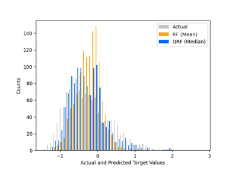
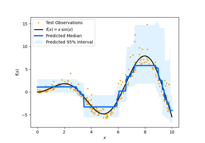
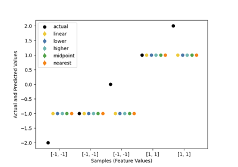
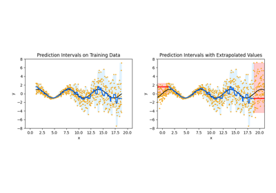
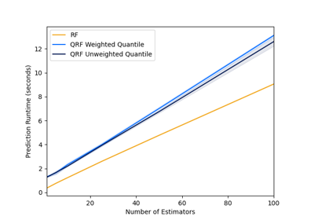
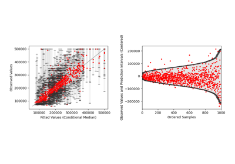

General Examples
General-purpose and introductory examples.

Quantile regression forest vs. standard regression forest
Quantile regression forest vs. standard regression forest

Quantile regression forest predictions compared to ground truth function
Quantile regression forest predictions compared to ground truth function

Predicting with different quantile interpolation methods
Predicting with different quantile interpolation methods

Quantile regression forest extrapolation problem
Quantile regression forest extrapolation problem

Predicting with weighted and unweighted quantiles
Predicting with weighted and unweighted quantiles

Quantile regression forest prediction intervals
Quantile regression forest prediction intervals